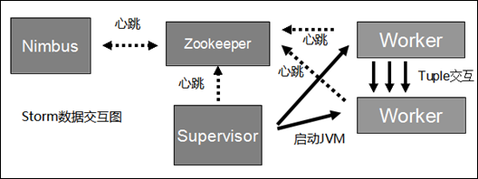

介绍
Storm是一个免费开源、分布式、高容错的实时计算系统。Storm令持续不断的流计算变得容易，弥补了Hadoop批处理所不能满足的实时要求。Storm经常用于在实时分析、在线机器学习、持续计算、分布式远程调用和ETL等领域。
Storm主要分为两种组件Nimbus和Supervisor。这两种组件都是快速失败的，没有状态。任务状态和心跳信息等都保存在Zookeeper上的，提交的代码资源都在本地机器的硬盘上。
- Nimbus负责在集群里面发送代码，分配工作给机器，并且监控状态。全局只有一个。
- Supervisor会监听分配给它那台机器的工作，根据需要启动/关闭工作进程Worker。每一个要运行Storm的机器上都要部署一个，并且，按照机器的配置设定上面分配的槽位数。
- Zookeeper是Storm重点依赖的外部资源。Nimbus和Supervisor甚至实际运行的Worker都是把心跳保存在Zookeeper上的。Nimbus也是根据Zookeerper上的心跳和任务运行状况，进行调度和任务分配的。
- Storm提交运行的程序称为Topology。 Topology处理的最小的消息单位是一个Tuple，也就是一个任意对象的数组。
- Topology由Spout和Bolt构成。Spout是发出Tuple的结点。Bolt可以随意订阅某个Spout或者Bolt发出的Tuple。Spout和Bolt都统称为component。 下图是一个Topology设计的逻辑图的例子。

下图是Storm的数据交互图。可以看出两个模块Nimbus和Supervisor之间没有直接交互。状态都是保存在Zookeeper上。Worker之间通过ZeroMQ传送数据。

安装
版本 ：apache-storm-1.1.1 ,jdk-8u181,zookeeper-3.4.10
目录 ： /opt
wget https://archive.apache.org/dist/storm/apache-storm-1.1.1/apache-storm-1.1.1.tar.gz
wget http://download.oracle.com/otn-pub/java/jdk/8u181-b13/96a7b8442fe848ef90c96a2fad6ed6d1/jdk-8u181-linux-x64.tar.gz
wget http://ftp.kddilabs.jp/infosystems/apache/zookeeper/zookeeper-3.4.10/zookeeper-3.4.10.tar.gz
tar -zxvf apache-storm-1.1.1.tar.gz && tar -zxvf jdk-8u181-linux-x64.tar.gz && tar -zxvf zookeeper-3.4.10.tar.gz
echo -e "export JAVA_HOME=/opt/jdk1.8.0_181 \n\
export JRE_HOME=\${JAVA_HOME}/jre \n\
export CLASSPATH=.:\${JAVA_HOME}/lib:\${JRE_HOME}/lib \n\
export PATH=\${JAVA_HOME}/bin:\$PATH \n\
" >> /etc/profile && source /etc/profile
zk配置
3台机器
172.16.131.134 master Zookeeper （有） Nimbus（有） Supervisor（无）
172.16.131.133 slave_1 Zookeeper （有） Nimbus (无) Supervisor（有）
172.16.131.135 slave_2 Zookeeper （有） Nimbus （无）Supervisor（有
tickTime=2000
# The number of ticks that the initial
# synchronization phase can take
initLimit=10
# The number of ticks that can pass between
# sending a request and getting an acknowledgement
syncLimit=5
# the directory where the snapshot is stored.
# do not use /tmp for storage, /tmp here is just
# example sakes.
dataDir=/opt/zookeeper-3.4.10/data
dataLogDir =/opt/zookeeper-3.4.10/log
# the port at which the clients will connect
clientPort=2181
server.1=172.16.131.134:2888:3888
server.2=172.16.131.133:2888:3888
server.3=172.16.131.135:2888:3888
在zookeeper-3.4.10目录里面创建log data 目录
mkdir log && mkdir data
134 /data
echo '1' > data/myid
133 /data
echo '2' > data/myid
135 /data
echo '3' > data/myid
在3台机器上的bin目录里面启动
./zkServer.sh start
./zkServer.sh status
storm配置
vim conf/storm.yaml
storm.zookeeper.servers:
- "172.16.131.134"
- "172.16.131.133"
- "172.16.131.135"
storm.zookeeper.port: 2181
nimbus.host: ["172.16.131.134"]
nimbus.seeds: ["172.16.131.134"]
ui.port:8090
storm.local.dir: "/opt/apache-storm-1.1.3/data"
supervisor.slots.ports:
- 6700
- 6701
- 6702
- 6703
然后，在slave_1 和 slave_2上再复制同样的配置 在master节点
./storm ui &
./storm nimbus &
在 slave节点上
./storm ui &
./storm supervisor &